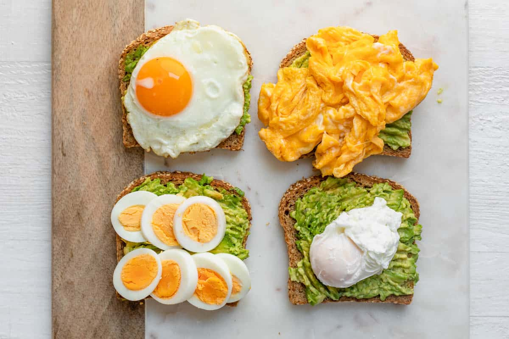

Avocado And Egg Toast

In Need Of A Quick And Tasty Breakfast?
With only three main ingredients, you can make a tasty breakfast that will fuel you until lunch. Not only is it quick but very healthy and you can add any ingredients you want to make it that much more filling and enticing.
Ingredients
- 1 teaspoon paprika powder
- 1 teaspoon garlic paste
- 1 teaspoon salt
- 1/2 teaspoon cumin powder
- 2 eggs
- 1 tablespoons olive oil
- 1 avocado
Steps
- Prepare your avocado, you can blend for smooth guacamole or mash with your fork for a more chunkier variety and add your seasonings.
- Depending on how you like your eggs, either go straight to step 3 for a sunny side up egg, boil some water to make boiled or poached eggs or crack your eggs in a bowl and add salt for scrambled eggs. I prefer scrambled.
- Put your olive oil in the pan and cook your egg, it should only take a few minutes.
- Toast your bread and put a generous serving of guacamole and then your eggs.
- Feel free to season with a bit more salt and pepper, if needed.
- Voila, your breakfast is complete.